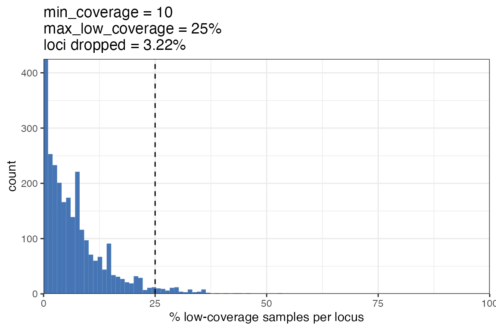

Reading in and filtering data
Bob Verity
Last updated: 11 Dec 2023
filtering_data.RmdThis tutorial covers:
- Reading in data from a
vcffile into MIPanalyzer format - Filtering based on coverage
- Filtering based on other criteria
Reading in data and understanding the
mipanalyzer_biallelic format
Before doing anything, we will need to load some additional packages:
We will be working from a vcf file stored in the
inst/extdata folder of this package. Our first decision
point is whether we want to read this vcf file in allowing
for more than two alleles at any locus, or forcing data to bi-allelic.
Many analyses assume bi-allelic SNPs, which also makes the data format
more efficient as we only need to encode the read counts
and coverage as single numbers, rather than storing
multiple counts for each allele. Here we will assume
bi-allelic data, but there will be a section below on the multi-allelic
data format.
The vcf_to_mipanalyzer_biallelic() can read in file and
convert it to our custom format. It accepts a path to a vcf
file, or alternatively you can read the vcf in yourself and
pass this to the function:
# define the path to your .vcf file
vcf_path <- here("inst/extdata", "DRC_pf3k_filtered.vcf")
# load as mipanalyzer_biallelic object
dat_biallelic <- vcf_to_mipanalyzer_biallelic(file = vcf_path)
#> Scanning file to determine attributes.
#> File attributes:
#> meta lines: 135
#> header_line: 136
#> variant count: 2667
#> column count: 122
#>
Meta line 135 read in.
#> All meta lines processed.
#> gt matrix initialized.
#> Character matrix gt created.
#> Character matrix gt rows: 2667
#> Character matrix gt cols: 122
#> skip: 0
#> nrows: 2667
#> row_num: 0
#>
Processed variant 1000
Processed variant 2000
Processed variant: 2667
#> All variants processed
#> Processing
#> Done
# take a peek
dat_biallelic
#> samples = 113
#> loci = 2667We can see that we are working with 113 samples and 2667 loci. This dataset is actually filtered down from Pf3k whole genome data using samples from the Democratic Republic of the Congo (DRC). Although this object is its own custom class, it is essentially a list:
class(dat_biallelic)
#> [1] "mipanalyzer_biallelic"
# look at sub-object names
names(dat_biallelic)
#> [1] "coverage" "counts" "samples" "loci"
#> [5] "filter_history" "vcfmeta"The coverage and counts objects are our
main genetic data:
-
coverageis the “DP” element of thevcf, which gives the combined read depth at this position. -
countsis the first value in the “AD” element of thevcf, which gives the read depth of the first allele. We assume that this is the reference (REF) allele by convention.
Both of these objects are matrices, with samples in rows and loci in columns:
The next object is the samples element. This is a
data.frame containing the sample names from the vcf. You
can add whatever columns you like to this data.frame, making it easy to
keep track of meta-data alongside genetic data.
dim(dat_biallelic$samples)
#> [1] 113 1
head(dat_biallelic$samples)
#> SAMPLE_ID
#> 1 QG0182-C
#> 2 QG0183-C
#> 3 QG0184-C
#> 4 QG0185-C
#> 5 QG0186-C
#> 6 QG0187-CNext up is the loci element. This is a data.frame
containing all the information in the “fix” element of the
vcf:
dim(dat_biallelic$loci)
#> [1] 2667 8
head(dat_biallelic$loci)
#> CHROM POS ID REF ALT QUAL FILTER
#> 1 Pf3D7_01_v3 95518 <NA> G T 7926880 PASS
#> 2 Pf3D7_01_v3 95632 <NA> G A 6345960 PASS
#> 3 Pf3D7_01_v3 95641 <NA> G A 6106740 PASS
#> 4 Pf3D7_01_v3 95680 <NA> A G 5786050 PASS
#> 5 Pf3D7_01_v3 95685 <NA> G T 5966510 PASS
#> 6 Pf3D7_01_v3 95686 <NA> A C 5924990 PASS
#> INFO
#> 1 AC=154;AF=0.634;AN=226;DP=404727;RegionType=Core;VQSLOD=10.78;VariantType=SNP
#> 2 AC=85;AF=0.372;AN=224;DP=351431;RegionType=Core;VQSLOD=11.47;VariantType=SNP
#> 3 AC=85;AF=0.374;AN=222;DP=345575;RegionType=Core;VQSLOD=11.95;VariantType=SNP
#> 4 AC=84;AF=0.365;AN=222;DP=329961;RegionType=Core;VQSLOD=11.99;VariantType=SNP
#> 5 AC=84;AF=0.365;AN=222;DP=329708;RegionType=Core;VQSLOD=12.02;VariantType=SNP
#> 6 AC=84;AF=0.367;AN=222;DP=330180;RegionType=Core;VQSLOD=12.03;VariantType=SNPNext is the filter_history element. This contains a
running record of all filters that are applied to the data via the
MIPanalyzer package. Currently, we have applied no filters and so what
we see are the raw dimensions of the data. We will return to this object
later:
dat_biallelic$filter_history
#> description samples loci n_missing prop_missing function_call
#> 1 raw data 113 2667 478 0.001586085 NAFinally, the vcfmeta element contains anything in the
“meta” slot of the vcf. There may be a wide range of
different information here, which is stored as a list. Here are just the
first three elements in our example data:
dat_biallelic$vcfmeta[1:3]
#> [1] "##fileformat=VCFv4.2"
#> [2] "##FILTER=<ID=PASS,Description=\"All filters passed\">"
#> [3] "##ALT=<ID=NON_REF,Description=\"Represents any possible alternative allele at this location\">"In summary, the mipanalyzer_biallelic class of data is
just a re-coding of the vcf. It exposes the
coverage and counts data, while also nice
features in terms of keeping track of meta-data and filters.
Filtering data based on coverage
We very often want to focus our attention on sites that have good coverage. Low coverage sites lead to uncertain estimates of within-sample allele frequencies, and may also be a sign of sequencing problems.
We could choose to filter by sample, or by locus. Loci that have
systematically low coverage over many samples may indicate issues with
sequencing. We can use the explore_filter_coverage_loci()
to explore this issue via the following steps:
- Set a
min_coveragethreshold. Anycoveragevalue less than this threshold we define as low coverage. - Count the percentage of samples that are low coverage. Do this for every locus.
- Plot a histogram of this percentage
- Set the
max_low_coveragethat we will accept as a percentage. Work out what how many samples fall below this level.
This gives an indication of how many samples we will lose if we apply this filter, and produces the following plot:
dat_biallelic |>
explore_filter_coverage_loci(min_coverage = 10, max_low_coverage = 25)
We can see that we will lose 3.22% of samples if we apply this filter, which is acceptable. We can therefore go ahead and apply the filter:
dat_biallelic <- dat_biallelic |>
filter_coverage_loci(min_coverage = 10, max_low_coverage = 25)Next, we can perform the same task but looking at it from a sample perspective. This involves the following steps:
- Set a
min_coveragethreshold. Anycoveragevalue less than this threshold we define as low coverage. - Count the percentage of loci that are low coverage. Do this for every sample.
- Plot a histogram of this percentage
- Set the
max_low_coveragethat we will accept as a percentage. Work out what how many loci fall below this level.
We obtain the following plot:
dat_biallelic |>
explore_filter_coverage_samples(min_coverage = 10, max_low_coverage = 10)
Note that from the shape of the histogram we have good coverage for
many samples, and then a few samples that perform poorly with low
coverage over many loci. We therefore set quite a stringent threshold of
max_low_coverage = 10 to exclude these samples. We can see
that we will lose 20.35% of samples, which is a fairly stringent filter,
but will leave us with high quality samples.
dat_biallelic <- dat_biallelic |>
filter_coverage_samples(min_coverage = 10, max_low_coverage = 10)Every time we apply one of these filters, the change to data
dimension is stored in the filter_history element along
with the function call itself:
dat_biallelic$filter_history
#> description samples loci n_missing prop_missing
#> 1 raw data 113 2667 478 0.0015860849
#> 2 filter loci based on coverage 113 2581 267 0.0009154715
#> 3 filter samples based on coverage 91 2581 146 0.0006216178
#> function_call
#> 1 <NA>
#> 2 filter_coverage_loci(x = dat_biallelic, min_coverage = 10, max_low_coverage = 25)
#> 3 filter_coverage_samples(x = dat_biallelic, min_coverage = 10, max_low_coverage = 10)We can see that we are left with 91 samples, down from 113 initially, and 2581 loci, down from 2667. Our proportion of missing data has dropped considerably through these filters.
Filtering based on other criteria
Above, we filtered based on coverage, but we may also want to exclude
loci/samples for other reasons. The filter_overcounts()
function replaces any cell where the count exceeds the
coverage with NA. It should technically not be
possible for count to exceed coverage due to
the way they are defined, but this can come about due to upstream
issues. Note that we are not actually dropping any samples or loci via
this filter, we are just recoding information as missing.
# deal with count>coverage issues
dat_biallelic <- dat_biallelic |>
filter_overcounts()Now that we have discarded some samples, we may be left with some
loci that are no longer variable in the samples that remain. We probably
want to discard these as they do not contain useful information. We can
do this via the filter_loci_invariant() function:
# drop loci that are no longer variable
dat_biallelic <- dat_biallelic |>
filter_loci_invariant()Again, we can look at our filter history to see how these changes have impacted our data dimensions:
dat_biallelic$filter_history
#> description samples loci n_missing prop_missing
#> 1 raw data 113 2667 478 0.0015860849
#> 2 filter loci based on coverage 113 2581 267 0.0009154715
#> 3 filter samples based on coverage 91 2581 146 0.0006216178
#> 4 replace overcounts with NA 91 2581 146 0.0006216178
#> 5 filter loci to drop invariant sites 91 2366 146 0.0006781047
#> function_call
#> 1 <NA>
#> 2 filter_coverage_loci(x = dat_biallelic, min_coverage = 10, max_low_coverage = 25)
#> 3 filter_coverage_samples(x = dat_biallelic, min_coverage = 10, max_low_coverage = 10)
#> 4 filter_overcounts(x = dat_biallelic)
#> 5 filter_loci(x = x, locus_filter = !invariant, description = description)